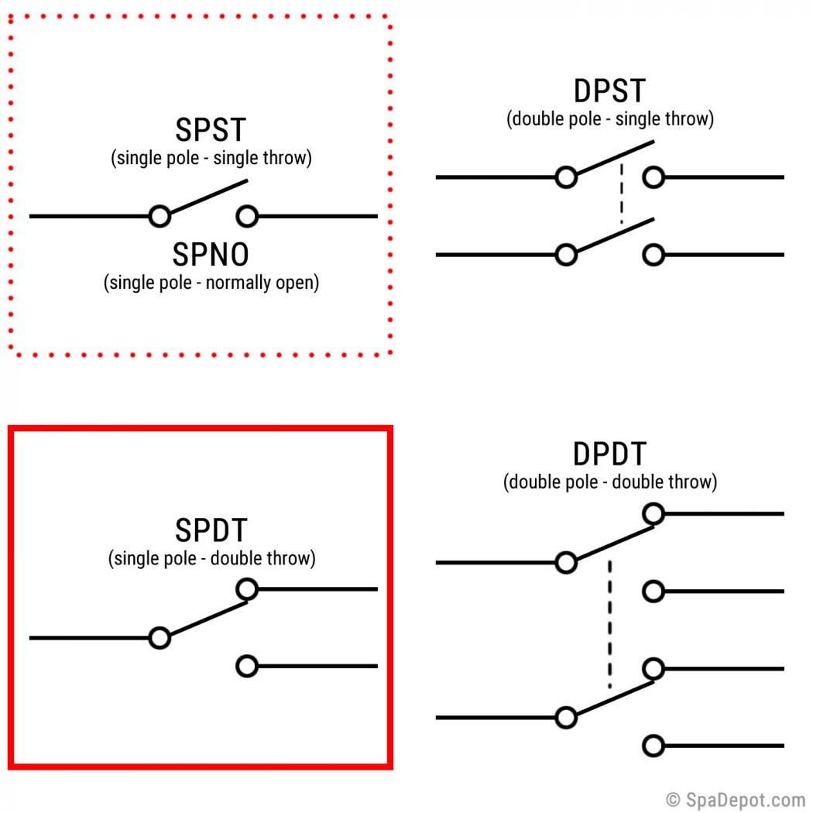
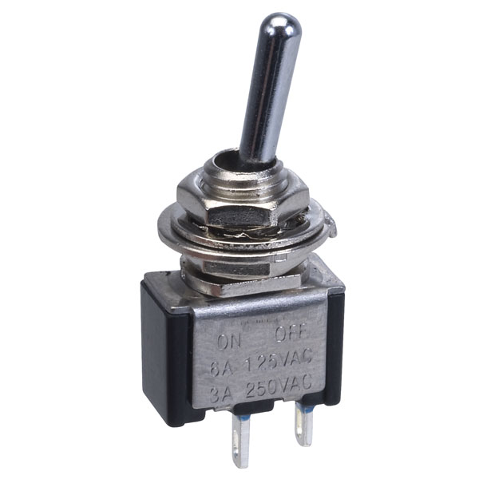
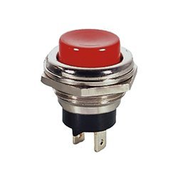
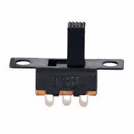
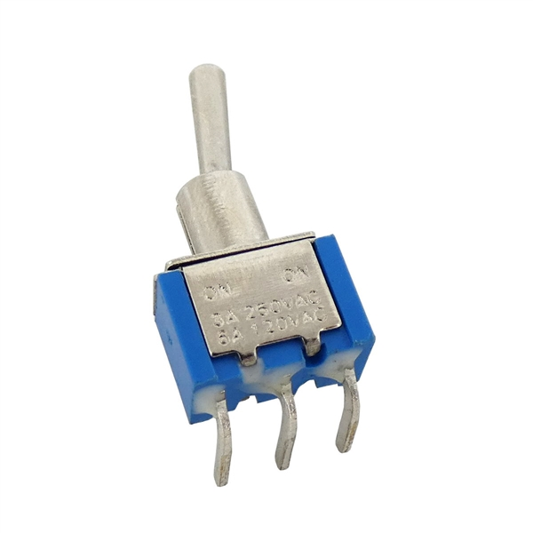
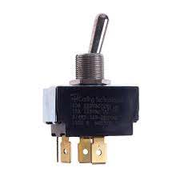
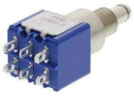

Input Devices(Sensors)
What are sensors
A sensor is a device used to sense changes in the environment. They could be in the form of manual input like a switch or automatic input like a LDR for light.
Methods of reading sensors
There are 3 methods of reading/obtaining information from a sensor.
- Always available
- Data is always available
- Changes occur very slowly(e.g. temperature)
- Polling
- Constantly checking sensor for input
- Sensor will indicate to processor that there is new reading available once new information is gathered.
- Data is read when processor notices the changes
- e.g.Switch,IR sensor
- Triggering
- A trigger signal initiates the reading
- Processor sends a signal to the sensor, asking it to gathers data
- When information is gathered, it is sent back to the processor
- E.g. Ultrasonic sensor
Libraries
Some sensors and actuators(e.g. servo motor) requires a dedicated library for certain functions. Some libraries can be found in the arduino compiler app but others need to be installed. To do so, go to Sketch > Include Library > Manage Library >(search for need library in the search bar). Alternatively, we can do a quick google seach for the library and install the .zip file through Sketch > Include Library > Add .Zip Library. Restart Arduino and check if the library has been installed correctly.
Type of sensors available
- Switch: An electrical component that can open or close a circuit. It can provide a digital signal of either LOW or HIGH. It comes in 4 forms and there are multiple variants of each.
 - Single Pole Single Throw (SPST): This is a simple on/off switch which encompasses some push button switches, slide switchs and toggle switches. Examples below are the Toggle and push button switches respectively.
  - Single Pole Double Throw (SPDT): This is a more common switch which allows for the diversion of current. You would usually have power connected to the middle and the switch allows you to divert current to either Normally Opened(NO) or Normally Closed(NC). Examples are most slide and toggle switches as shown below respectively.
  - Double Pole Single Throw (DPST) and Double Pole Double Throw (DPDT) are very rarely used in mini circuit project and thus will not cover in depth how it works but below are examples of DPST and DPDT respectively.
  - LDR: The light dependent resistor is a variable resistor that varies its ohmage based on light intensity. The brighter it is, the lower its resistance
- Distance: There are 2 types of distance sensors, IR and Ultrasonic. IR Obstacle Avoidance Sensor will remains at a fixed state until an object is at a certain distance to it(adjusted with the variable resistor attached to it). Once detected, the state changes and remain at its new state until the object is out of the distance. It has a range of 2cm to 40cm.
Ultrasonic Sensor HC-SR04 has a range between 2cm to 4m, and uses ultrasound to detect distance before returning a pulse proportional to the distance measureed(similar to how a submarines sonar works). It has and accuracy of 3mm and measures at an angle of 15 degrees. - Temp sensor: The DHT-11 measures and records the the temperature and humidity of its environment. The DHT-11 has 4 pins. The first pin goes to VCC power source. The second pin goes to Data in the arduino. The third pin is not used while the forth pin goes to ground.